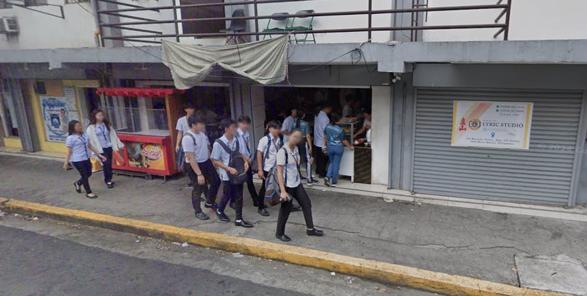
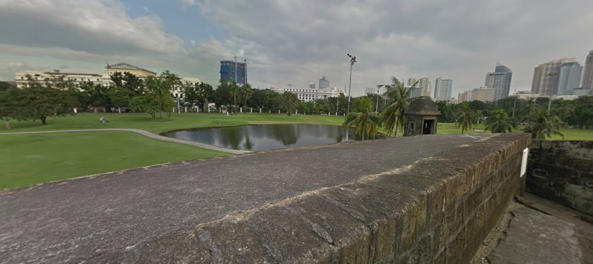

Daddys Sisig House
721 Mercedes St. Manila, Near TUP MANILA
It's Delicious here and very budget-friendly. The meals are truly meant for stuudents becuase for as low as 40 pesos, you can get a really filling meal.

Read moreNandito Ako Kung Saan Wala Ka
721 Mercedes St. Manila, Near TUP MANILA
It's Delicious here and very budget-friendly. The meals are truly meant for stuudents becuase for as low as 40 pesos, you can get a really filling meal.

Read moreInternet Cafe infront of TUP Gate 4
Ryzon Is a very comfortable spot for students, specially for emergencies when you need to submit assignments, PowerPoint presentation, or anything else, it's also a great place to play games
 Read more
Read more
Historical landMark In Manila
Intramuros is a great place to hang out during breaks or when yor're doing fake face to face. The breeze here feels amazing, and you can really feel a sense of peace. When you're here, sespecially with friends, it feels like you dont have a single problem in the world

Read more